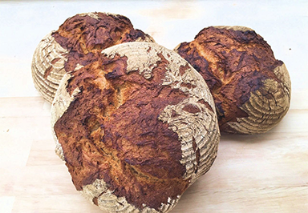

Brothistorie

28/06/2015
Von ägyptischen Kornmahlerinnen zur modernen Mühle
Fermentum tortor non enim aliquet mauris del condimentum. Nam aliquam pretium duis sem feugiat condimentum...
Es ist das Brot, das einen warm hält, und nicht der Pelz.
(Russiches Sprichwort)
Wenn nur ein Brot da wäre zum Essen, Zähne würde ich schon finden
(Russiches Sprichwort)
Brot ist der größte Verbündete, den ein Heer hat. Denn der Soldat marschiert nie weiter als sein Magen.
(Russiches Sprichwort)
Altes Brot ist nicht hart. Gar kein Brot, das ist hart.
(Russiches Sprichwort)